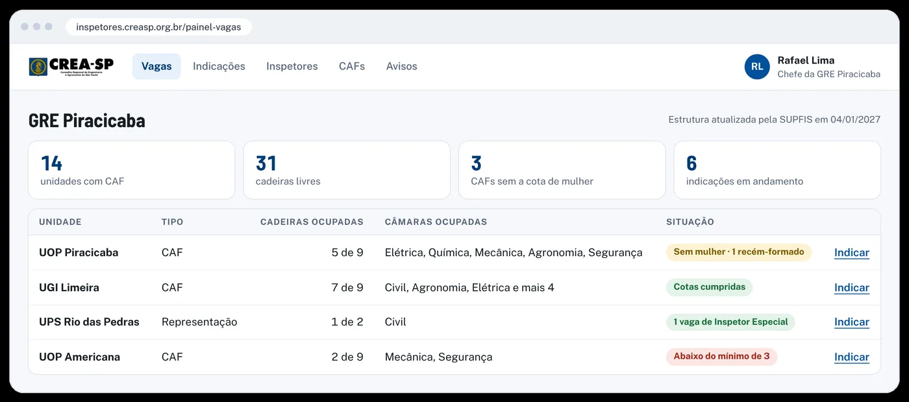

Portfólio · Bruno Lima · HoldUp
Software que nasce do dado real de quem usa.
Lojas e marketplaces, aplicativos que funcionam sem sinal, sistemas com regra no banco, painéis com dados oficiais e modelos de aprendizado de máquina. Cada projeto aqui começou lendo os dados de verdade do cliente antes de desenhar a primeira tela.
Áreas
Seis frentes, o mesmo jeito de trabalhar
Os projetos estão agrupados pelo tipo de problema que resolvem. Clique numa área para ver só os projetos dela.
Casos em destaque
Cinco projetos, contados de perto
Cada caso tem o problema, o escopo entregue, os números reais e uma demonstração que dá para usar aqui mesmo.
Canteiros Urbanos: a horta do bairro vendendo pela internet
Loja de hortaliças e temperos com catálogo, cesta recorrente, pagamento online, pedido pelo WhatsApp e painel do produtor com clientes e frete por bairro.
Registrar a produção onde não tem sinal
Comunidades de pesca artesanal registram cada viagem no celular, sem internet. A ficha fica cifrada no aparelho, sobe sozinha quando há sinal e nunca duplica.
Plataforma de Inspetores do Crea-SP
Da indicação à posse de cerca de 2.600 inspetores: requisitos conferidos na fonte, assinatura gov.br, dossiê pronto e presença pelo celular.

Prever risco cardiovascular com um transformer para tabelas
Cinco algoritmos sobre 425.195 pacientes. O TabPFN venceu sem ajuste fino, e a interpretação por SHAP mostra o peso de cada fator.
Calculadora de custos do AVC para a Boehringer Ingelheim
O gestor escolhe o território e vê dose, administração, sequelas, mortalidade e impacto no orçamento em 5 anos. Seis provas automáticas a cada recálculo.
Método
Como os projetos acontecem
O mesmo roteiro serve para loja, painel ou plataforma: entender o dado antes da tela e entregar cedo para quem vai usar.
Ler os dados de verdade
Antes do desenho, a inspeção: quantos cadastros, quantas grafias, onde o número não fecha.
Regra no banco
Permissão, trava e cálculo ficam no banco, testados. A tela só mostra.
Primeira versão cedo
Uma versão usável entra na rotina em poucas semanas e cresce com o que quem usa pede.
Tudo conferido e documentado
Verificações automáticas, histórico de cada alteração e documentação para outra pessoa assumir.
Todos os projetos
O catálogo completo
Filtre por área ou busque por tecnologia, cliente ou tema. Projetos com estudo de caso abrem a página com a demonstração.
Ferramentas
Com o que eu construo
Escolhidas pelo problema. Na maioria dos projetos, banco PostgreSQL com regras por linha, páginas leves que abrem rápido no celular e Python para dados.
Contato
Vamos conversar sobre o seu projeto
Bruno Lima, sócio da HoldUp, desenvolvimento de soluções. Formado em Análise e Desenvolvimento de Sistemas e em Filosofia, com formação em Ciência de Dados.